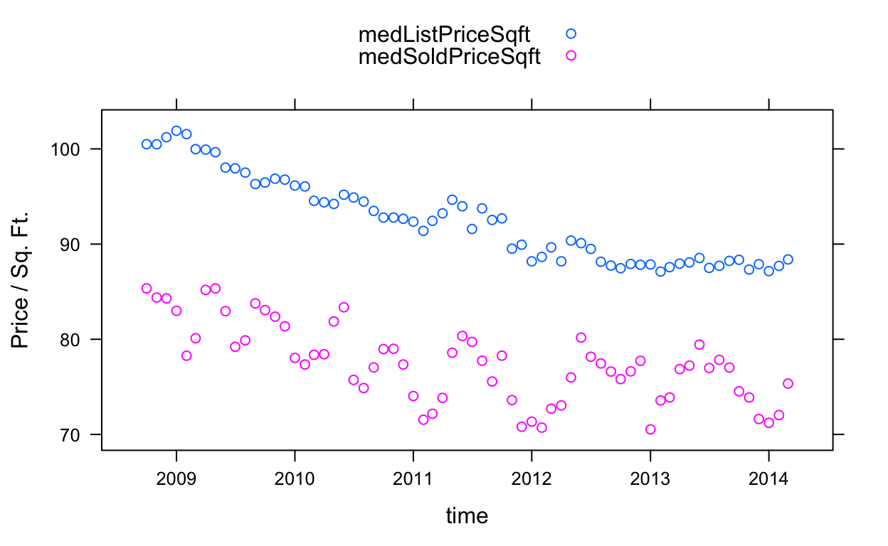
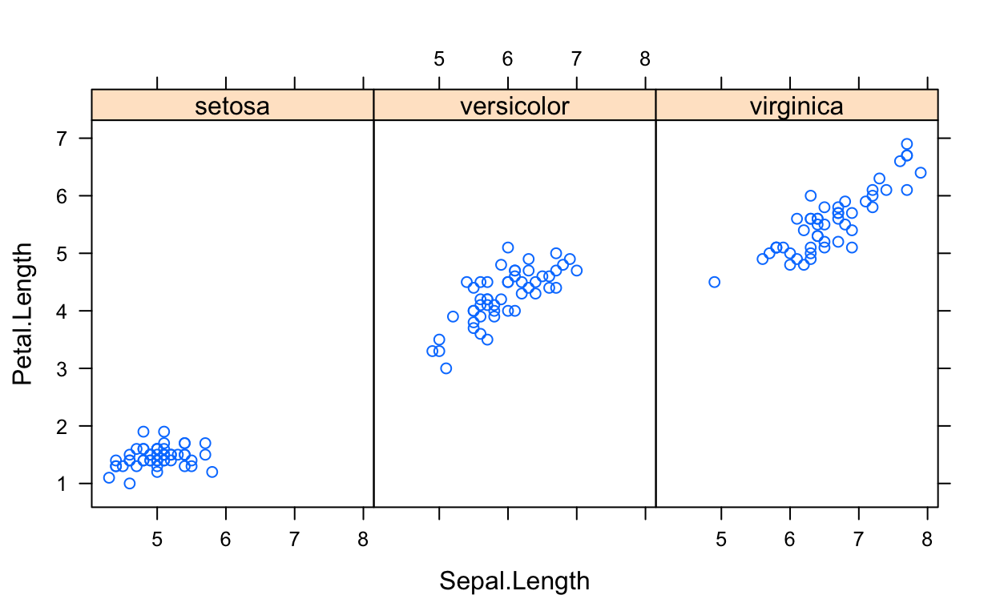
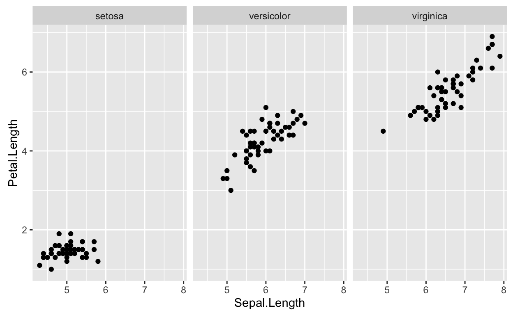
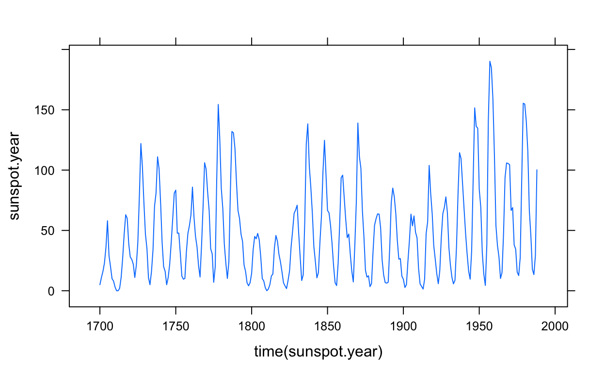
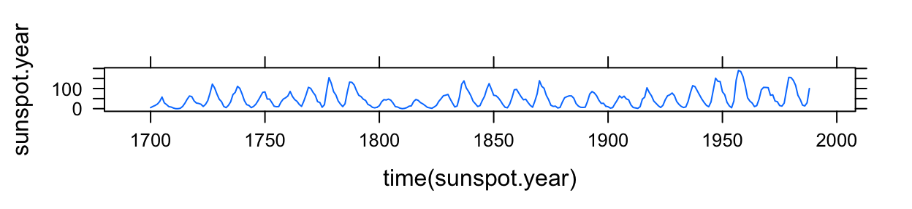
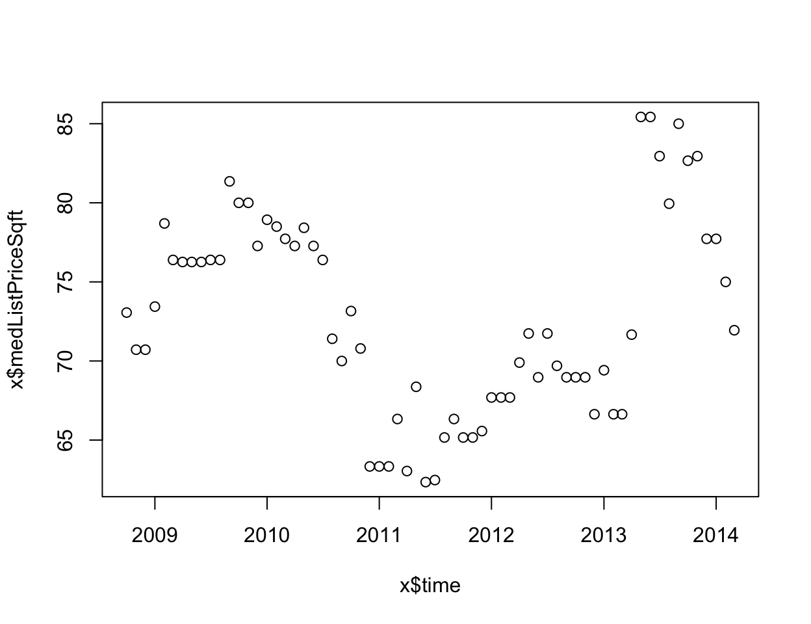
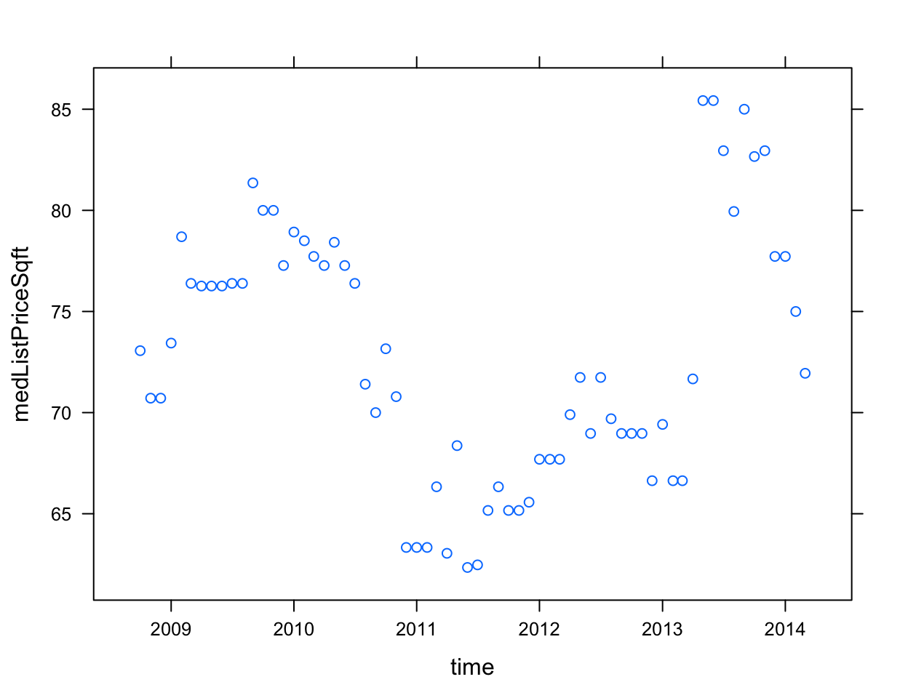

Introduction
Background
Trelliscope provides a way to flexibly visualize large, complex data in great detail from within the R statistical programming environment. Trelliscope is a component in the Tessera environment.
For those familiar with Trellis Display, faceting in ggplot, or the notion of small multiples, Trelliscope provides a scalable way to break a set of data into pieces, apply a plot method to each piece, and then arrange those plots in a grid and interactively sort, filter, and query panels of the display based on metrics of interest. With Trelliscope, we are able to create multipanel displays on data with a very large number of subsets and view them in an interactive and meaningful way.
Another important function of trelliscope is the organization of all of the Trelliscope displays and other visual artifacts we have deemed worthy of presentation into what we call a “visualization database”, which can be easily shared with other researchers in a way that they can interact with.
To start getting a feel for Trelliscope, continue to the next section, “Quickstart”.
Quickstart
Before getting into the details, we’ll first go over a quick example to provide a feel for what can be done with Trelliscope. This example is adapted from the quick start example in the datadr documentation, but with a specific focus on Trelliscope.
Package installation
First, we need to install the necessary components, datadr and trelliscope. These are R packages that we install from github.
# install packages (one time only)
install.packages("devtools") # if not installed
devtools::install_github("tesseradata/datadr")
devtools::install_github("tesseradata/trelliscope")Our example is based on a small dataset that we can handle in a local R session, and therefore we only need to have these two packages installed. For support of more scalable back ends like Hadoop when dealing with larger data sets, see the quickstart section on the Tessera website.
We will use as an example a data set consisting of the median list and sold price of homes in the United States, aggregated by county and month from 2008 to early 2014, reported from Zillow and obtained from quandl. A pre-processed version of this data is available in a package called housingData, which we will use. To install this package:
devtools::install_github("hafen/housingData")Environment setup
Now we load the packages and look at the housing data:
# load packages
library(housingData)
library(datadr)
library(trelliscope)
# look at housing data
str(housing)'data.frame': 224369 obs. of 7 variables:
$ fips : Factor w/ 3235 levels "01001","01003",..: 187 187 187 187 187 187 187 187 187 187 ...
$ county : Factor w/ 1969 levels "Abbeville County",..: 17 17 17 17 17 17 17 17 17 17 ...
$ state : Factor w/ 57 levels "AK","AL","AR",..: 6 6 6 6 6 6 6 6 6 6 ...
$ time : Date, format: "2008-10-01" "2008-11-01" ...
$ nSold : num NA NA NA NA NA NA NA NA NA NA ...
$ medListPriceSqft: num 308 299 NA 290 288 ...
$ medSoldPriceSqft: num 326 NA 318 306 292 ...We see that we have a data frame with the information we discussed, in addition to the number of units sold.
Setting up a visualization database
We create many plots throughout the course of analysis, and with Trelliscope, we can store these in a “visualization database” (VDB), which is a directory on our computer where all of the information about our display artifacts is stored. Typically we will set up a single VDB for each project we are working on. To initialize and connect to a VDB, we call the vdbConn() function with the path where our VDB is located (or where we would like it to be located), and optionally give it a name.
# connect to a "visualization database"
conn <- vdbConn("vdb", name = "tesseraTutorial")This connects to a directory called "vdb" relative to our current working directory. The first time you do this it will ask to make sure you want to create the directory. R holds this connection in its global options so that subsequent calls will know where to put things without explicitly specifying the connection each time.
Visualization by county and state
Trelliscope allows us to visualize large data sets in detail. We do this by splitting the data into meaningful subsets and applying a visualization to each subset, and then interactively viewing the panels of the display.
An interesting thing to look at with the housing data is the median list and sold price over time by county and state. To split the data in this way, we use the divide() function from the datadr package. It is recommended to have some familiarity with the datadr package.
# divide housing data by county and state
byCounty <- divide(housing,
by = c("county", "state"))Our byCounty object is now a distributed data frame (ddf), which is simply a data frame split into chunks of key-value pairs. The key defines the split, and the value is the data frame for that split. We can see some of its attributes by printing the object:
# look at byCounty object
byCounty
Distributed data frame backed by 'kvMemory' connection
attribute | value
----------------+-----------------------------------------------------------
names | fips(cha), time(Dat), nSold(num), and 2 more
nrow | 224369
size (stored) | 15.73 MB
size (object) | 15.73 MB
# subsets | 2883
* Other attributes: getKeys(), splitSizeDistn(), splitRowDistn(), summary()
* Conditioning variables: county, stateAnd we can look at one of the subsets:
# look at a subset of byCounty
byCounty[[1]]$key
[1] "county=Abbeville County|state=SC"
$value
fips time nSold medListPriceSqft medSoldPriceSqft
1 45001 2008-10-01 NA 73.06226 NA
2 45001 2008-11-01 NA 70.71429 NA
3 45001 2008-12-01 NA 70.71429 NA
4 45001 2009-01-01 NA 73.43750 NA
5 45001 2009-02-01 NA 78.69565 NA
...The key tells us that this is Abbeville county in South Carolina, and the value is the price data for this county.
Creating a panel function
To create a Trelliscope display, we need to first provide a panel function, which specifies what to plot for each subset. It takes as input either a key-value pair or just a value, depending on whether the function has two arguments or one.
For example, here is a panel function that takes a value and creates a lattice xyplot of list and sold price over time:
# create a panel function of list and sold price vs. time
timePanel <- function(x)
xyplot(medListPriceSqft + medSoldPriceSqft ~ time,
data = x, auto.key = TRUE, ylab = "Price / Sq. Ft.")Note that you can use most any R plot command here (base R plots, lattice, ggplot, rCharts, ggvis).
test it on a subset:
# test function on a subset
timePanel(byCounty[[20]]$value)
Great!
Creating a cognostics function
Another thing we can do is specify a cognostics function for each subset. A cognostic is a metric that tells us an interesting attribute about a subset of data, and we can use cognostics to have more worthwhile interactions with all of the panels in the display. A cognostic function needs to return a list of metrics:
# create a cognostics function of metrics of interest
priceCog <- function(x) {
zillowString <- gsub(" ", "-", do.call(paste, getSplitVars(x)))
list(
slope = cog(coef(lm(medListPriceSqft ~ time, data = x))[2],
desc = "list price slope"),
meanList = cogMean(x$medListPriceSqft),
meanSold = cogMean(x$medSoldPriceSqft),
nObs = cog(length(which(!is.na(x$medListPriceSqft))),
desc = "number of non-NA list prices"),
zillowHref = cogHref(
sprintf("http://www.zillow.com/homes/%s_rb/", zillowString),
desc = "zillow link")
)
}We use the cog() function to wrap our metrics so that we can provide a description for the cognostic, and we also employ special cognostics functions cogMean() and cogRange() to compute mean and range with a default description.
We should test the cognostics function on a subset:
# test cognostics function on a subset
priceCog(byCounty[[1]]$value)$slope
time
-0.0002323686
$meanList
[1] 72.76927
$meanSold
[1] NaN
$nObs
[1] 66
$zillowHref
[1] "<a href=\"http://www.zillow.com/homes/Abbeville-County-SC_rb/\" target=\"_blank\">link</a>"Making the display
Now we can create a Trelliscope display by sending our data, our panel function, and our cognostics function to makeDisplay():
# create the display and add to vdb
makeDisplay(byCounty,
name = "list_sold_vs_time_quickstart",
desc = "List and sold price over time",
panelFn = timePanel,
cogFn = priceCog,
width = 400, height = 400,
lims = list(x = "same"))This creates a new entry in our visualization database and stores all of the appropriate information for the Trelliscope viewer to know how to construct the panels.
If you have been dutifully following along with this example in your own R console, you can now view the display with the following:
view()And select the display with the name “list_sold_vs_time_quickstart”.
If you have not been following along but are wondering what that view() command did, you can visit here for an online version. You will find a list of displays to choose from, of which the one with the name list_sold_vs_time_quickstart is the one we just created. This brings up the point that you can share your Trelliscope displays online – more about that as well as how to use the viewer will be covered in the Trelliscope tutorial – but feel free to play around with the viewer and see what you can discover.
This covers the basics of trelliscope. Hopefully you now feel comfortable enough to dive into the rest of the tutorial.
Trelliscope Fundamentals
Multipanel Display
Trelliscope is based on the notion of multipanel displays. A multipanel display is one in which the data is split into subsets, typically based on the values of one or more conditioning variables. A plot function is applied to each subset, and each plot is called a panel. The multipanel display arranges the panels in rows and columns, reminiscent of a garden trellis. There are many compelling reasons for this simple visualization approach, and we point the curious reader to more information about this, in particular, Trellis Display, and small multiples.
A simple illustration
To illustrate multipanel displays, we will show examples on a small but famous data set, the iris data, which gives the measurements in centimeters of the sepal and petal length and width for 50 flowers from each of 3 species of iris. The species are setosa, versicolor, and virginica.
A natural way to break this data into subsets is by species. We can acheive this with the xyplot() function in the lattice package, an R port of Trellis Display, with the following:
library(lattice)
xyplot(Petal.Length ~ Sepal.Length | Species,
data = iris, layout = c(3, 1))
Here we specify that we want to plot the petal length against sepal length, with the | operator indicating that we want a panel for each species. Hence species is our conditioning variable. We also specify that we would like to lay out the panels as 3 columns and 1 row. Notice that the .
For those more familiar with ggplot2, we can acheive the same effect with using facet_wrap():
library(ggplot2)
p <- qplot(Sepal.Length, Petal.Length, data = iris)
p + facet_wrap(~ Species, ncol = 3)
There are many important aspects of multipanel display that are good to grasp before making Trelliscope displays, and we will cover a couple of these next, axis limits and aspect ratio.
Axis Limits
Since one of the most powerful uses of multipanel displays is the ability to make comparisons of panels across different subsets of the data, appropriate choice of axis limits is very important. When viewing panels of a Trellis display, meaningful visual comparisons between panels greatly depend on how the limits of the x and y axes are determined. There are three choices for axis limits:
- “same”: the same limits are used for all the panels
- “sliced”: the range (max - min) of the scales are constrained to remain the same across panels
- “free”: the limits for each panel are determined by just the points in that panel
We will illustrate each of these using the lattice xyplot() function since they are readily implemented. Understanding how to use these settings with xyplot() is not extremely important - we will handle that when we start making Trelliscope displays. But understanding the concepts and importance is the focus of this section..
“Same” axes
Panels with “same” axes all have the same axis limits. For example, the plot we already created with this data had “same” axes:
xyplot(Petal.Length ~ Sepal.Length | Species,
data = iris, layout = c(3, 1))Every panel’s x-axis of Sepal.Length starts around 4cm and ends around 8cm, and every panel’s y-axis of Petal.Length ranges from around 1cm to 7cm. Choosing “same” axis limits helps emphasize that the means of both Sepal.Length and Petal.Length are significantly different for each species. We can also judge that the Petal.Length appears to change in variability for each species.
“Same” axes are the default setting for xyplot() and are in general a good default choice. The plotting function pre-computes these axis limits across the whole data set and sets them for us.
“Sliced” axes
When setting the axes to “sliced”, the range of the data plotted in each panel is constrained to be the same. For example, with the iris data:
xyplot(Petal.Length ~ Sepal.Length | Species,
data = iris, layout = c(3, 1),
scales = list(relation = "sliced"))Now, if we look at the x-axis, we see that each panel has a range of about 3cm (for example, the panel for the setosa species ranges from 3.5cm to 6.5cm) and similarly for the y-axis. We can no longer easily make judgements about how different each species is in terms of the mean (to do that, we have to actually look at the axis labels, which is not very effective). But now the change in variability across species is much more clear. For example, measurements for setosa are less variable around their mean than for the other species. Choosing “sliced” axes is useful for when we do not care as much about differences in location or when the location of the data for each panel has such a large range that “same” axes keep us from seeing the detail in the data.
“Free” axes
With “free” axes, we allow the data in each panel to fill the space of the panel. For example:
xyplot(Petal.Length ~ Sepal.Length | Species,
data = iris, layout = c(3, 1),
scales = list(relation = "free"))Now it is much more difficult to make useful comparisions across panels, but choosing “free” axes can still be a logical choice when we just care about seeing the full resolution of the data within each panel.
How to choose axis limits
Determining suitable axis limits is dependent on what is being visualized, but typically “same” or “sliced” are good choices as they enable panel-to-panel comparisons, which is where much of the power of this type of visualization lies. You might choose “sliced” if you are interested in relative behaviors in terms of scale, or “same” if you are interested in relative behaviors both in terms of location and scale. You can make different choices for each axis individually. It is also often helpful to make multiple versions of the same plot with different axis limit settings for different purposes.
In lattice, the handling of panel axis limits is specified by the scales argument, as we have seen, and we will see that there is a similar notion in Trelliscope. It is also always possible to manually compute the limits we would like and hard code them into our panel plotting function, although as important as axis limits are, Trelliscope tries to make their use as straightforward as possible.
Aspect Ratio
This section will be short, but the message is important: in multipanel display (or any display for that matter), aspect ratio matters. The aspect ratio of a plot is the measure of the height divided by the width of the box bounding the plot area. The choice of aspect ratio can drastically effect your perception of interesting features in a plot.
A famous example comes from the built-in R data set sunspot.year, which gives us the yearly numbers of sunspots from 1700 to 1988. Below are two plots of the same data, each with a different aspect ratio.
xyplot(sunspot.year ~ time(sunspot.year), type = "l")

If we look at the data in the top plot, we see an obvious cyclical behavior in the number of spots. However, the bottom plot emphasizes something that was much more difficult to see in the top plot, namely that the sunspot activity that ramps up very quickly tends to taper off more gradually - a very important insight that has implications for how the data is modeled.
In Trelliscope, we will see that the aspect ratio is simply specified by providing the panel bounding box dimensions.
Never let the choice of aspect ratio be chosen by what you think is a convenient panel size for looking at (e.g. square) - choose it wisely. There are helpful tools to assist the choice of aspect ratio, such as banking to 45 degrees, but often the choice is a subjective but informed one.
Visualization Databases
We create several visual displays throughout the course of an analysis. As John Tukey, the father exploratory data analysis, states:
We can expect to need to need a variety of pictures to look at a data set of any complexity.
We have found this to be true for every analysis we have been involved in. When creating so many displays, and particulary for Trellis Display, it becomes important to be able organize them.
We can think of visualizations we create that are worth keeping, sharing, and revisiting as visual artifacts. The term artifact is fitting:
artifact [ahr-tuh-fakt]
1. any object made by human beings, especially with a view to subsequent use.
Trelliscope provides a mechanism to organize and store visual artifacts in a visualization database (VDB). Typically we create a VDB for each analysis project we are working on. Within a VDB, displays can be organized into groups by analysis thread. Artifacts in a VDB can either be simple plots created from various R plotting packages, like the ones we have seen so far, or Trelliscope displays, which are displays created for a divided dataset with a potentially very large number of subsets.
Trelliscope provides a way to view and interact with displays in a VDB, as well as easily embed them in a web-based “lab notebook” - a more organized presentatin of the progression of an analysis, which we discuss in the Viewing Displays and Lab Notebooks sections.
Trelliscope Display
Initialize a VDB
With the fundamentals down, we are now ready to start creating some Trelliscope displays and getting into some details.
Before we create our first display, we need to initiate and connect to a visualization database (VDB). A VDB connection is simply a pointer to a directory on disk where all of the VDB files reside or will reside.
# initialize a connection to a new VDB which will
# go in a directory "vdb" in the current working directory
conn <- vdbConn("vdb", name = "tesseraTutorial")If the VDB connection directory doesn’t exist, it will ask whether it should be created. Giving the VDB a name is optional, but will be useful for later when we sync our VDB to a web server.
In any subsequent R session, we can connect to the existing VDB directory by issuing the same command. The VDB’s name was stored when we first initialized the VDB, so it does not need to be specified again:
# re-connect to an existing VDB
conn <- vdbConn("vdb")The name can be overridden by specifying a new one.
Most Trelliscope functions need the VDB connection information to know where to put things. It can be tedious to always supply this, so vdbConn() sets a global R option called "vdbConn" that holds the connection information. If in a Trelliscope function we do not explicitly specify the connection, the default is to search for the global vdbConn option. The assumption is that in any one R session, the user will be using just one VDB, and thus there will not be multiple conflicting connections.
We can now look at some examples and start populating the VDB with displays.
Division with datadr
Since Trelliscope is a multipanel display system, the first step of creating a display is to break the data into subsets, with each subset representing the data to go in one panel of the display. For a given data set, there can be multiple meaningful ways to split the data.
We achieve data partitioning through the datadr package, the companion package to Trelliscope. This package implements the Divide & Recombine (D&R) approach to data analysis. If you have not spent time with datadr, we cover enough in this section to scrape by, but we highly recommend that you spend some time with the datadr tutorial.
The datadr package provides a mechanism for dividing potentially very large data sets into subsets, applying analytical methods to each subset, and then recombining the results in a statistically valid way. Here, we use datadr to partition our data, and then Trelliscope will provide a visual recombination.
Home price data
We will stick with the housing data we saw in the quick start section throughout the remainder of this section, but going beyond the quick start, we will focus on several details and provide more in-depth explanations for what is happening.
If you did not go through the quick start, this data consists of the median list and sold price of homes in the United States, aggregated by county and month from 2008 to early 2014, reported from Zillow and obtained from quandl. A pre-processed version of this data is available in a package called housingData, which we will use. If you have not already installed the package:
devtools::install_github("hafen/housingData")Dividing the housing data
There are many ways we might want to split up this data - by year, by state, by state and county, etc. Here, we will divide by state and county as we did before.
library(housingData)
# divide housing data by county and state
byCounty <- divide(housing, by = c("county", "state"))Let’s look at the resulting distributed data frame (“ddf”) object:
# look at the resulting object
byCounty
Distributed data frame backed by 'kvMemory' connection
attribute | value
----------------+-----------------------------------------------------------
names | fips(cha), time(Dat), nSold(num), and 2 more
nrow | 224369
size (stored) | 15.73 MB
size (object) | 15.73 MB
# subsets | 2883
* Other attributes: getKeys(), splitSizeDistn(), splitRowDistn(), summary()
* Conditioning variables: county, stateWe see that this is a distributed data frame and has almost 2900 subsets. Let’s look at a subset to make sure it looks how we think it should:
# see what a subset looks like
byCounty[[1]]$key
[1] "county=Abbeville County|state=SC"
$value
fips time nSold medListPriceSqft medSoldPriceSqft
1 45001 2008-10-01 NA 73.06226 NA
2 45001 2008-11-01 NA 70.71429 NA
3 45001 2008-12-01 NA 70.71429 NA
4 45001 2009-01-01 NA 73.43750 NA
5 45001 2009-02-01 NA 78.69565 NA
...The result is a key-value pair, with the key indicating that the subset corresponds to Abbeville County in South Carolina. The value contains the data frame of data we will want to plot.
We have our division. Now we are ready to make some displays.
A Bare Bones Display
To quickly get our feet wet with creating a display, we start with a minimal example.
Panel functions
Creating a plot first requires the specification of what you would like to be plotted for each subset, a panel function. The function is applied to each key-value pair subset in your data. This function behaves like all other per-subset functions in datadr, which can operate either on both a key and a value of just the value (see here for more details).
Some things to know about the panel function:
- The panel function is applied to each subset of your divided data object
- The panel function returns something that can be printed to a graphics device or can be rendered in a web page (for example, we have experimantal support for
ggvisandrChartssince they output html and javascript content) - Those familiar with lattice can think of the panel function as the lattice panel function and the data argument(s) as the lattice packet being plotted (except that you conveniently get the whole data structure instead of just
xandy) - Although we have been mainly referring to lattice and have been showing examples with lattice, you do not need to use lattice in your panel function – you can use base R graphics, lattice, or ggplot2, etc.
- However, using something like lattice or ggplot2 adds benefit because these create objects which can be inspected to pull out axis limits, etc. (see our discussion of
prepanelfunctions later on)
Panel function for list price vs. time
Let’s start with a simple scatterplot of list price vs. time, using base R graphics commands. Specifying a panel function is as simple as that - creating a function that expects the data of a subset as an argument and generates a plot:
# create a panel function of list and sold price vs. time
bareBonesPanel <- function(x)
plot(x$time, x$medListPriceSqft)When constructing panel functions, it can be useful to pull out one subset of the data and incrementally build the function with this data as an example. For example, to get the value of the first subset, we can do the following:
# get the value of the first subset
x <- byCounty[[1]]$value
# construct plotting commands to go in panel function
plot(x$time, x$medListPriceSqft)
We can test our panel function on a subset by passing the value of a subset to the function:
# test function on a subset
bareBonesPanel(byCounty[[1]]$value)
Making the display
To create a display, applying this panel function over the entire data set, we simply call makeDisplay():
# create a simple display
makeDisplay(byCounty,
panelFn = bareBonesPanel,
name = "list_vs_time_barebones",
desc = "List price per square foot vs. time")The two most important arguments are the first argument, which is the data to plot, and the panel function, panelFn. The other arguments in this example simply identify the display. We will later see other arguments to makeDisplay() that provide additional useful functionality.
Viewing the display
To view the display:
# open the Trelliscope viewer for the VDB
view()This will bring up the Trelliscope viewer in a web browser. Note that this viewer is designed for modern web browsers and Internet Explorer is not recommended. If you aren’t following along with the example in your own R console, we have pushed this VDB out to RStudio’s shinyapps.io site here.
What you should see in the web browser is a modal box with the title “Open a New Display”. If at any point you want this box to come back up to choose a display, you can bring it up by clicking the folder icon in the top right of the viewer window. This will give you a list of displays to choose from. At this point, there will be one or two displays, depending on whether you ran through the quick start.
We want to select the display we just created, which we named “list_vs_time_barebones”. We can do this by clicking the appropriate row in the list of displays. This brings up the display in the viewer, showing the first panel of 2883. You can use the arrow keys to navigate from one panel to the next.
While we will provide a more in-depth tutorial on the viewer later, at this point feel free to experiment with some of the viewer features available along the left panel. The options are broken down into two categories, “View Options” and “Cognostics”. We will talk about cognostics later in this section, and there is not too much interesting to do with cognostics for this example. But it is worth taking some time to experiment with the options available in these controls, many of which are self-explanatory, keeping in mind that no harm will be done to the display.
Cognostics
When dealing with large data sets that get partitioned into subsets that number in the thousands or hundreds of thousands, it begins to be infeasible or ineffective to look at all every panel in a Trelliscope display. For our county example, if we put enough panels on one page, we can page through all ~2900 panels fairly quickly. But even in this case, we would benefit from an effective way to call panels to our attention that are of most importance, based on different criteria. We can do such a thing in Trelliscope using cognostics.
The term cognostics was coined by John Tukey, when he anticipated the situation of having more plots to look at than humanly possible:
There seems no escape from asking the computer to sort out the displays to be displayed… To do this, the computer must judge the relative different displays, the relative importance of showing them. This means calculating some “diagnostic quantities.” … It seems natural to call such computer guiding diagnostics “cognostics”. We must learn to choose them, calculate them, and use them. Else we drown in a sea of many different displays.
For our purposes, a “cognostic” in Trelliscope is essentially any single metric about one subset of data that describes some aspect of that subset. We can compute any number of cognostics for a given display, and then in the Trelliscope viewer we can sort, filter, or sample our panels based on these metrics. Metrics can include statistical summaries, categorical variables, goodness-of-fit metrics, etc. We will see several examples in this section.
Specifying a cognostics function
The cognostics function is applied to each subset just like the panel function and must return a list which can be flattened into a data frame. For our data, there are several cognostics we might be interested in. Typically the most useful cognostics are arrived upon iteratively.
Here, we specify the slope of a fitted line of list price vs. time, the mean list price, the number of non-NA list price observations, and finally, a special cognostic that is a URL that links to a Zillow display of homes for sale in the county.
# create a cognostics function to be applied to each subset
priceCog <- function(x) {
zillowString <- gsub(" ", "-", do.call(paste, getSplitVars(x)))
list(
slope = cog(coef(lm(medListPriceSqft ~ time, data = x))[2],
desc = "list price slope"),
meanList = cogMean(x$medListPriceSqft),
nObs = cog(length(which(!is.na(x$medListPriceSqft))),
desc = "number of non-NA list prices"),
zillowHref = cogHref(
sprintf("http://www.zillow.com/homes/%s_rb/", zillowString),
desc = "zillow link")
)
}Note that each metric is wrapped in a function cog() or cog*(). Doing so allows you to control the type of variable and give it a description, which will be useful in the viewer.
The helper functions cogMean(), cogRange(), cogHref(), etc. can be used when defining the cognostics list. They are not necessary but can be helpful. For example, the difference between cogRange() and range() and others is that there is removal of NAs and extra checking for errors so that the cognostic calculation is robust.
Let’s test the cognostics function on a subset:
# test the cognostics function on a subset
priceCog(byCounty[[1]]$value)$slope
time
-0.0002323686
$meanList
[1] 72.76927
$nObs
[1] 66
$zillowHref
[1] "<a href=\"http://www.zillow.com/homes/Abbeville-County-SC_rb/\" target=\"_blank\">link</a>"Now, let’s add these cognostics to our display:
# add cognostics to the display
makeDisplay(byCounty,
panelFn = bareBonesPanel,
cogFn = priceCog,
name = "list_vs_time_cog_simple_cog",
desc = "List price per square foot vs. time, with cognostics")Now, when we view this display (which again we can do with view() and selecting the appropriate display from the list), we can use the cognostics to interact with the panels. For example, in the “Table Sort/Filter” control panel (clickable from the list of options on the left), we can sort or filter the panels baed on any of these metrics. We can look at counties for only select states, sorted from highest to lowest mean list price, for example. The additional controls, such as “Univariate Filter” and “Bivariate Filter” allow us to look at plots of the cognostics and visually filter panels. We will cover this in greater detail in the Viewing Displays section, but feel free to play around right now. Also, use your imagination for what some other useful cognostics might be and try to add them.
Trelliscope Axis Limits
As we discussed before, giving consideration to axis limits is very important for creating meaningful Trellis displays. In Trelliscope, axis limits can be computed by specifying the x and y axes as “free”, “sliced”, or “same”. The default axis limit specification is “free”, as we saw in the display we just created - each panel’s axis limits are bound by the range of the data in each subset. Since Trelliscope is very general - any R plotting technology can potentially be used in a panel function - the default is to not try to do anything with axis limits.
Note: the discussion in this section is constrained to two-dimensional panels (with x and y axes), which covers the vast majority of useful statistical visualization techniques. If you have panel functions that produce plots that do not have quantitative x and y scales (e.g. pie charts - no!!), then the functionality described in this section is not useful.
How axis limits are computed
To be able to compute overall axis limits for a display, Trelliscope needs to know about the range of the data in each panel. Thus, when we create a display with “same” or “sliced” axes, Trelliscope must pass through the data and make these computations.
There are two ways in which Trelliscope can make the per-subset range calculations. The first is by simply using the panel function itself. This is the easiest approach, but currently only works with lattice and ggplot2 panel functions. The second approach is to specify a prepanel function. We will cover both of these in this section.
Specifying axis limits with the panel function
To specify axis limits with a panel function, our panel function needs to use lattice or ggplot2. This is because these return plot objects from which we can extract the range of the data in the plot.
# lattice panel function of list and sold price vs. time
latticePanel <- function(x)
xyplot(medListPriceSqft ~ time, data = x)
# test function on a subset
latticePanel(byCounty[[1]]$value)
Suppose we want the x and y axis limits to be “same”
# setting axis limits in the call to makeDisplay()
makeDisplay(byCounty,
panelFn = latticePanel,
cogFn = priceCog,
name = "list_vs_time_xy_same",
desc = "List price per square foot vs. time with x and y axes same",
lims = list(x = "same", y = "same"))If you view this display by calling view() and selecting it, you will see that the y-axis now ranges from about 0 to 1500 for every panel and the x-axis ranges from 2009 to 2014 for every panel - they are the “same” across panels.
You might notice that a y-axis range of $0 to $1500 per square foot is a very large range, and there are probably only a very small number of counties that are in that higher range. This causes the interesting features such as large relative dips in price within a county to be washed out, and might want us to think more about our choice of axis limits for the y-axis. We will discuss this in more detail below.
Suppose for now that we want to keep the y-axis “free”, but we want to ensure that the x-axis is the same for every panel. We can specify the rules for each axis independently:
# setting axis limits in the call to makeDisplay()
makeDisplay(byCounty,
panelFn = latticePanel,
name = "list_vs_time_x_same",
desc = "List price per square foot vs. time with x axis same",
lims = list(x = "same", y = "free"))Note that since “free” is the default, we could have omitted y = "free" in the lims argument above.
Specifying axis limits with a prepanel function
The previous example is the most simple way to specify axis limits. However, it comes with a potential cost – the panel function must be applied to each subset in order to obtain the limits. For panel functions that take some time to render, this is wasted time.
As an alternative, we can explicitly supply a prepanel function to the lims argument list, called prepanelFn. This notion will be familiar to lattice users.
The prepanel function takes each subset of data and returns a list with xlim and ylim. For example:
# using a prepanel function to compute axis limits
preFn <- function(d) {
list(
xlim = range(d$time, na.rm = TRUE),
ylim = range(d$medListPriceSqft, na.rm = TRUE)
)
}
makeDisplay(byCounty,
panelFn = latticePanel,
name = "list_vs_time_x_same_pre",
desc = "List price per square foot vs. time with x and y axes same",
lims = list(x = "same", prepanelFn = preFn)
)Determining limits beforehand with prepanel()
In both of the above approaches, we computed axis limits at the time of creating the display. This is not recommended for data with a very large number of subsets. There are a few reasons for this.
- Setting the axis limits based on “sliced” or “same” is not very robust to outliers, and we may wish to understand and modify the axis limits prior to creating the display.
- Computing the axis limits can be more costly than creating a display, and it can be good to separate the two, particularly when we may be iterating on getting a panel function just right.
- Both of the above approaches require a panel function that allows for axis limits to be both extractable and settable, which does not work for
We can use a function, prepanel(), to compute and investigate axis limits prior to creating a display.
The main parameter to know about in prepanel() is prepanelFn, which operates in the same way as we saw before – it is either a lattice or ggplot2 panel function or it is a function that takes a subset of the data as an input and returns a list including the elements xlim and ylim (each a vector of the min and max x and y ranges of the data subset).
# compute axis limits prior to creating display using prepanel()
pre <- prepanel(byCounty, prepanelFn = preFn)Under construction
Setting the limits in your panel function
Another option, of course, is to set axis limits explicitly in your panel function to whatever you like to achieve the effect of “same” or “sliced”.
Panel Storage
The default behavior for how panels are stored is to store a reference to the input data object and then render the panels on-the-fly in the viewer, pulling the appropriate subsets from the data as necessary. Thus, if we have a very large ddo/ddf input object on HDFS, we do not make a copy for visualization, and only have to render the images being requested at the time of viewing. When calling makeDisplay(), only the prepanel and cognostics computations need to be done.
There is an option to pre-render, which can be useful when rendering the image is compute-intensive. However, this feature is still being developed and is currently not recommended.
Display State
Under construction
State specification
Specifying a default state in a display
Opening displays in a given state
Linking to states in other displays
Other Panel Functions
Under construction
Handling Displays
Under construction
Viewing Displays
Trelliscope Viewer
This section is under construction, but will soon provide a guide to all of the viewer features complete with screenshots.
Misc
Scalable System
You can go through most of the examples we’ve seen so far in this tutorial with a simple installation of R and the Trelliscope package and its R package dependencies.
To deal with much larger datasets, scaling comes automatically with Trelliscope’s dependency on datadr - any backend supported by datadr is supported by Trelliscope. These currently include Hadoop and local disk.
Using data on localDisk as input
Here is a quick example of how to create a Trelliscope display using input data that is stored on local disk.
First, let’s convert our in-memory byCounty object to a “localDiskConn” object:
# convert byCounty to a localDiskConn object
byCountyLD <- convert(byCounty,
localDiskConn(file.path(tempdir(), "byCounty")))This will prompt that it is okay to create this directory.
Now, we simply specify this object as the input to makeDisplay():
# make display using local disk connection as input
makeDisplay(byCountyLD, ...)The input connection is saved with the display object, and the data is used as the input when panels are rendered. If we want to pre-render the panels, we can specify an argument output, which can be any datadr data connection.
Using data on HDFS as storage and Hadoop/RHIPE as compute
To illustrate creating a display with data on HDFS, we first convert byCounty to an “hdfsConn” object:
# convert byCounty to hdfsConn
byCountyHDFS <- convert(byCounty,
hdfsConn("/tmp/byCounty"))Since we will be pulling data at random by key from this object, we need to convert it to a Hadoop mapfile using makeExtractable() (datadr tries to make things mapfiles as much as possible, and makeDisplay() will check for this and let you know if your data does not comply).
# make byCountyHDFS subsets extractable by key
byCountyHDFS <- makeExtractable(byCountyHDFS)Now, to create the display:
# make display using local disk connection as input
makeDisplay(byCountyHDFS, ...)FAQ
What should I do if I have an issue or feature request?
Please post an issue on github.
Reference
Related projects:
- datadr: R package providing the D&R framework
- RHIPE: the engine that enables D&R to work with large, complex data
References:
R Code
If you would like to run through all of the code examples in this documentation without having to pick out each line of code from the text, below are files with the R code for each section. All but the final section on scalable backends should run on a workstation with no other dependencies but the required R packages. The scalable backend code requires other components to be installed, such as Hadoop or MongoDB.